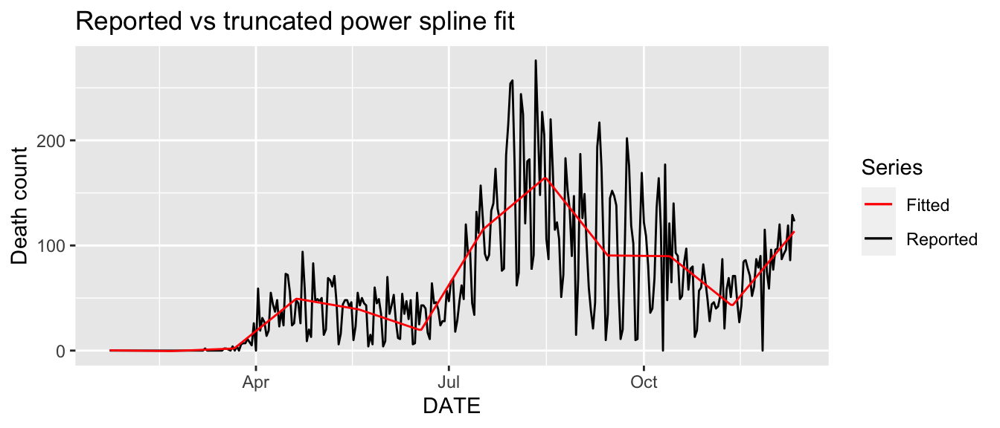
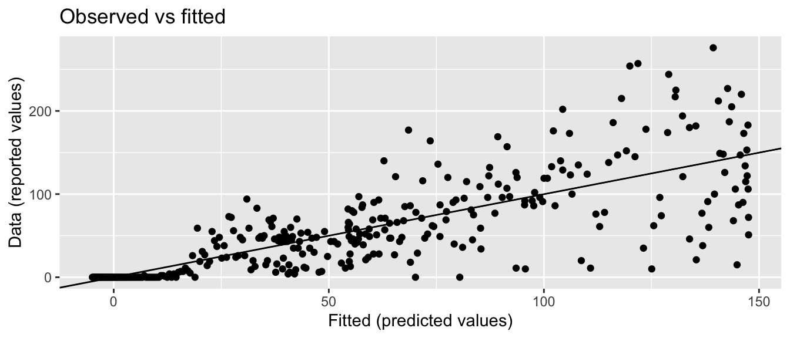
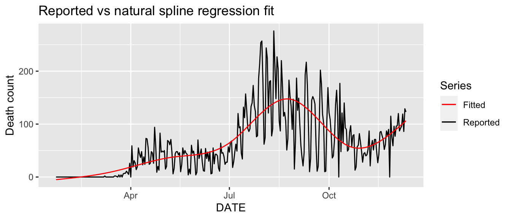
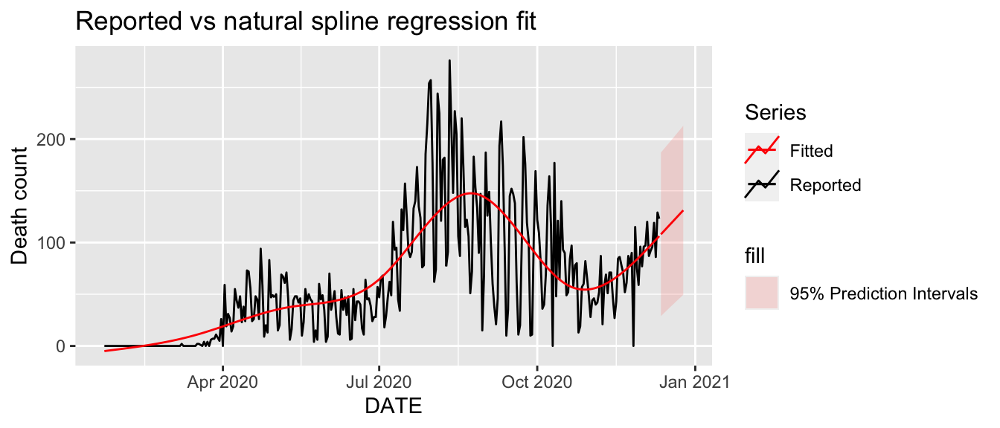
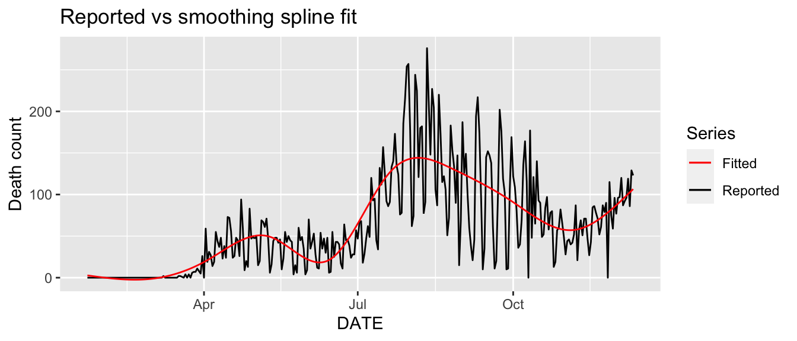

Chapter 11 Regression Methods
In Chapter 10 we introduces the time series analysis tools, which treat the value of a target variable at each time point as a random variable and uses the covariance function between these random variables to represent the correlation; another approach uses a deterministic smooth surface function to describe the variations and connections among values at different locations. This chapter introduces the latter approach.
In this chapter the analytical techniques of regression and discrimination are introduced as a means of quantifying the effect of a set of explanatory variables on the spatial distribution of a particular outcome. The material presented here is similar to that which might be presented in standard statistical texts, but includes an overview of the modifications needed to account for the temporal dependency frequently associated with disease data.
The use of nonparametric techniques has a long tradition in time series analysis. We present some nonparametric methods to forecast a seasonal univariate time series, and propose some dynamic updating methods to improve point forecast accuracy.
Perhaps the first aspect to consider is the type of outcome variable under investigation. In epidemiology interest lies in understanding patterns of disease in populations, so it is often the case that the outcome variable is either a count of disease events for area units, or more simply a binary response indicating the presence or absence of disease at a given location. Knowledge of the type of outcome variable is important since it determines the regression technique to be used and the options available to account for spatial dependence.
11.1 Parametric Regression Methods
Linear regression is a technique that can be used to model the broad-scale (first-order) trend. It allows the mean value of a continuous response variable (also known as a dependent variable) \(Y_t\) to be represented as a function of \(d\) explanatory (also known as covariate, predictor, or independent) variables: \[ Y_{t}=\beta_0+\beta_1X_{1t}+\beta_2X_{2t}+\cdots+\beta_dX_{dt}+\epsilon_t, \] where \(\beta_{0}, \beta_{1},\ldots, \beta_d\) are unknown parameters or coefficients, and \(\varepsilon\) is the error term.
Note the following key assumptions behind this type of regression analysis:
- The relationship between the response and the regressors is linear, at least approximately.
- The errors all have the same variance: \(\mathrm{Var}(\epsilon_t) = \sigma^2\) for all \(t\).
- The errors are independent of each other. That is, the value of the observation at any point is not affected by the value of observations at any other point.
- The residuals \(\epsilon_t\) are normally distributed with a mean of zero.
11.1.1 Examples
To predict the number of deaths for COVID-19, Altieri et al. (2021) considered various regression models for modeling the death count at the county level in the US. The death count is assumed to follow a linear or exponential relationship with time or the current death count.
A separate-county exponential predictor: a series of predictors built for predicting cumulative death counts for each county using only past death counts from that county. \[ E(D_{t+1}|t) = \exp{\left\{\beta_0 +\beta_1(t+1)\right\}}. \]
A separate-county linear predictor: a predictor similar to the separate county exponential predictors, but uses a simple linear format, rather than the exponential format. \[ E(D_{t+1}|t) = \beta_0 + \beta_1\times(t + 1). \]
A shared-county exponential predictor: a single predictor built using death counts from all counties, used to predict death counts for individual counties. \[ E(D_{t+1}|t) = \exp\left\{\beta_0 + \beta_1 \log\left(D_t + 1\right)\right\}. \]
An expanded shared-county exponential predictor: a predictor similar to the shared-county exponential predictor, which also includes COVID-19 case numbers and neighboring county cases and deaths as predictive features. \[ E(D_{t+1}|t) = \exp\left\{\beta_0 + \beta_1 \log\left(D_t + 1\right)\right\}. \]
A demographics shared-county exponential predictor: a predictor also similar to the shared-county exponential predictor, but which also includes various county demographic and health-related predictive features.
\[\begin{eqnarray*} E(D_{t+1}|t) &=& \exp\left\{\beta_0 + \beta_1 \log\left(D_t + 1\right) + \beta_2\log\left(I_{t-k+1}+1\right)\right. \\ && \left. + \beta_3\log\left(D_{t-k+1}^{\mathrm{neighbor}}\right) + \beta_4\log\left(I_{t-k+1}^{\mathrm{neighbor}}\right) \right\}. \end{eqnarray*}\]
In the following, we illustrate Methods 1 and 2 using the data Florida.ts. We are interested in making predictions for the period December 05-December 11, 2020, and we use a training set from the past week (November 28 to December 04, 2020). The linear regression model and exponential model will be fitted on the training set, and the fitted model is used to make predictions. Figure 11.1 shows the forecasts of the daily death count.
# set training data from NOV 28 to DEC 04
train <- Florida.ts %>%
filter_index("2020-11-28" ~ "2020-12-04")
# both linear and exponential trend
fit_trends <- train %>%
model(
linear = TSLM(Y.Death ~ trend()),
exponential = TSLM(log(Y.Death + 1) ~ trend()),
)
fc_trends <- fit_trends %>% forecast(h = 7)
# make predictions for the next week
Florida.ts %>%
autoplot(Y.Death) +
geom_line(data = fitted(fit_trends),
aes(y = .fitted, color = .model)) +
autolayer(fc_trends, alpha = 0.5, level = 95) +
labs(y = "Death Count",
title = "Florida daily new deaths")Figure 11.1: Reported death count vs linear and exponential fit.
11.1.2 Model adequacy checking
We should consider the validity of the assumptions mentioned before. Violations of the assumptions may yield an unstable model in the sense that a different sample could lead to a totally different model with opposite conclusions. Graphical analysis of residuals (original or scaled) is a very effective way to investigate the adequacy of the fit.
- Normal probability plot of residuals;
- Plot of residuals against the fitted values;
- Plot of residuals against each regressor variable;
- Plot of residuals in time series (if time series data were collected).
Goodness of Fit
How well does the model fit the data? One measure is \(R^2\), the so-called coefficient of determination or percentage of variance explained \[ R^2 = 1- \frac{\Sigma (Y_i-\hat{Y}_i)^2}{\Sigma (Y_i-\bar{Y}^2)} = 1- \frac{\mbox{RSS}}{\mbox{Total SS (corrected for mean)}}. \]
The range is \(0 \le R^2 \le 1\), and values closer to 1 indicates better fits. For simple linear regression \(R^2=r^2\) where \(r\) is the correlation between \(x\) and \(y\). An equivalent definition is \[ R^2 = \frac{\Sigma (\hat{Y}_i-\bar{Y})^2}{\Sigma (Y_i-\bar{Y})^2} = \frac{\mbox{Regression Sum of Squares}}{\mbox{Total SS (corrected for mean)}}. \]
After selecting the regression variables and fitting a regression model, it is necessary to plot the residuals to check that the assumptions of the model have been satisfied. There are a series of plots that should be produced in order to check different aspects of the fitted model and the underlying assumptions. We will now discuss each of them in turn.
ACF plot of residuals
With time series data, it is highly likely that the value of a variable observed in the current time period will be similar to its value in the previous period, or even the period before that, and so on. Therefore when fitting a regression model to time series data, it is common to find autocorrelation in the residuals. In this case, the estimated model violates the assumption of no autocorrelation in the errors, and our forecasts may be inefficient — there is some information left over which should be accounted for in the model in order to obtain better forecasts. The forecasts from a model with autocorrelated errors are still unbiased, and so are not “wrong,” but they will usually have larger prediction intervals than they need to. Therefore we should always look at an ACF plot of the residuals.
Histogram of residuals
It is always a good idea to check whether the residuals are normally distributed. As we explained earlier, this is not essential for forecasting, but it does make the calculation of prediction intervals much easier.
Residual plots against predictors
We would expect the residuals to be randomly scattered without showing any systematic patterns. A simple and quick way to check this is to examine scatterplots of the residuals against each of the predictor variables. If these scatterplots show a pattern, then the relationship may be nonlinear and the model will need to be modified accordingly.
It is also necessary to plot the residuals against any predictors that are not in the model. If any of these show a pattern, then the corresponding predictor may need to be added to the model (possibly in a nonlinear form).
11.2 Nonparametric Regression Methods
It is common for time series data to be trending. A linear trend can be modelled by simply using \(x_{1t}=t\) as a predictor,
\[
Y_t=\beta_0+\beta_1 t+\varepsilon_t,
\]
where \(t=1,\ldots,n\). A trend variable can be specified in the TSLM() function using the trend() special.
In this section, we further extend the linear regression to model the nonlinear trends.
A nonparametric regression model assumes \[ y_{t}=m\left(t\right)+\varepsilon_{t}, \ \ t=1,\cdots,n, \] where \(\varepsilon_{t}\) are assumed to be i.i.d. with mean \(0\) and variance \(\sigma^{2}\), \(m(\cdot)\) is a nonparametric regression function. Linear regression is a special case: \[ m(t)=\beta_{0}+\beta_{1}t. \]
11.2.1 Piecewise constant splines
We break the time domain into bins, and fit a different constant in each bin. We create cut-off points \(k_1\), \(k_2\), , \(k_{N}\) in the time domain, and then construct \(N + 1\) piecewise constant basis functions:
\[\begin{eqnarray*} B_0(t) &=& I(t <k_1), \\ B_1(t) &=& I(k_1 \leq t <k_2), \\ B_2(t) &=& I(k_2 \leq t <k_3), \\ \cdots &=& \cdots, \\ B_{N-1}(t) &=& I(k_{N-1} \leq t <k_N), \\ B_N(t) &=& I(k_N \leq t), \end{eqnarray*}\] where \(I(\cdot)\) is an indicator function that returns a \(1\) if the condition is true, indicator and returns a \(0\) otherwise.
Figure 11.2 shows a fit for the daily new death count for Florida using piecewise constant splines.
n <- nrow(Florida.ts)
t <- 1:n
y <- Florida.ts$Y.Death
# knots
N <- 21
knots <- 1 + (n-1)/(N+1) * (0:N)
# piecewise constant spline basis
t.rep <- matrix(rep(t, N), n, N)
knot.L <- matrix(rep(knots[-(N + 1)], each = n), n, N)
knot.R <- matrix(rep(knots[-1], each = n), n, N)
B <- 1*((knot.L <= t.rep) & (t.rep < knot.R))
X <- cbind(B, knots[N] < t & t <= n)
# piecewise constant spline fit
M <- t(X) %*% X
beta <- solve(M) %*% t(X) %*% y
yhat <- X %*% beta
Florida.ts$pcs_preds <- yhat
# plot of reported vs piecewise constant spline fit
Florida.ts %>%
ggplot(aes(x = DATE)) +
geom_line(aes(y = Y.Death, color = "Reported")) +
geom_line(aes(y = pcs_preds, color = "Fitted")) +
scale_color_manual(
values = c(Reported = "black", Fitted = "red")
) +
labs(y = "Death count",
title = "Reported vs piecewise constant spline fit") +
guides(color = guide_legend(title = "Series"))Figure 11.2: Piecewise constant spline smoothing for the daily new death count for Florida.
11.2.2 Truncated power splines
For univariate data, polynomial splines of degree \(p\) can be represented by an appropriate sequence of \(N+p+1\) spline basis functions, determined in turn by \(N\) interior knots. These produce functions that are piecewise polynomials of degree \(p\) between the knots, and joined up with continuity of degree \(p-1\) at the knots. As an example consider linear splines, or piecewise linear functions.
Let \(k_1 < k_2 < \ldots < k_N\) be knots in the time domain, for example, \([1, n]\). Let \(\phi_0(t) = 1\), \(\phi_1(t) = t\), \(\phi_j(t) = (t-k_{j-1})_{+}\) for \(j = 2, \ldots, N+1\) be the basis functions, where \(x_{+}\) denotes positive part of \(x\). Then, the regression is piecewise linear with bends at the knots.
y <- Florida.ts$Y.Death
n <- nrow(Florida.ts)
t <- 1:n
# knots
N <- 10
knots <- 1 + (n-1)/(N+1) * (0:N)
# truncated power spline basis functions
X <- matrix(1, n, N + 2)
X[, 2] <- t
t.rep <- matrix(rep(t, N), n, N)
tmp <- t.rep - matrix(rep(knots[2:(N + 1)], each = n), n, N)
X[, 3:(N+2)] <- tmp * (tmp > 0)
# truncated power spline fit
M <- t(X) %*% X
beta <- solve(M) %*% t(X) %*% y
yhat <- X %*% beta
Florida.ts$tps_preds <- yhat
# plot of reported vs truncated power spline fit
Florida.ts %>%
ggplot(aes(x = DATE)) +
geom_line(aes(y = Y.Death, color = "Reported")) +
geom_line(aes(y = tps_preds, color = "Fitted")) +
scale_color_manual(
values = c(Reported = "black", Fitted = "red")
) +
labs(y = "Death count",
title = "Reported vs truncated power spline fit") +
guides(color = guide_legend(title = "Series"))
In general, let \[ (t-k_{j})_{+}^{p}=\left\{\begin{array}{cc}(t-k_{j})^{p} & \mathrm{for} \ t\geq k_{j}\\ 0 & \mathrm{for} \ t<k_{j}\end{array}\right. \] Then, the \(N+p+1\) truncated power basis functions are: \[\begin{eqnarray*} \phi_{1}(t)&=&1, \\ \phi_{2}(t)&=&t, \\ &\vdots& \\ \phi_{p}(t)&=&t^{p},\\ \phi_{p+1}(t)&=&(t-k_{1})_{+}^{p},\\ &\vdots& \\ \phi_{p+N}(t)&=&(t-k_{N})_{+}^{p}. \end{eqnarray*}\]
We define the spline estimator for the regression function \(m(x)\) as \[ \hat{m}\left(t\right) =\sum_{k=0}^{p} \hat{\beta}_{k} t^{k}+\sum_{j=1}^{N}\hat{\gamma}_{j}\left(t-\kappa_{j}\right)_{+}^{p}, \] where \(\{\hat{\beta}_{0},\ldots,\hat{\beta}_{p},\hat{\gamma}_{1},\ldots,\hat{\gamma}_{N}\}\) are the least square estimators of \(\{\beta_{0},\ldots,\beta_{p},\gamma_{1},\ldots,\gamma_{N}\}\) based on the data. The shape of the basis functions is determined by the position of the knots \(k_{1}<\ldots<k_{N}\), which can, for example, be uniformly spread over the time domain.
11.2.3 B-splines and natural splines
Both B-splines and natural splines similarly define a basis over the time domain. They are made up of piecewise polynomials of a given degree, and have defined derivatives similarly to the piecewise defined functions.
To introduce the space of splines, we pre-select an integer \(N\), and divide the time domain \([a,b]\) into \((N+1)\) subintervals \(J_{j}=[k_{j},k_{j+1})\), \(j=0,\ldots,N-1\), \(J_{N}=[k_{N},b]\), where \(\{k_{j}\}_{j=1}^{N}\) is a sequence of equally-spaced points, called interior knots, given as \[ k_{1-p}=...=k_{-1}=k_{0}=a<k_{1}<\ldots<k_{N}<b=k_{N+1}=\ldots=k_{N+p}, \] in which \(k_{j}=j(b-a)/(N+1)\), \(j=0,1,\ldots,N+1\). The \(j\)-th B-spline of order \(r\) denoted by \(b_{j,r}\) is recursively defined by de Boor (2001) as follows:
For \(r=1\), basis \(b_{1,1},\ldots, b_{N,1}\): \[ b_{j,1}(t)=I\left\{t\in[k_{j},k_{j+1})\right\}. \]
Given \(b_{j,r-1},j=-(r-1),\ldots,N\), construct \(b_{j,r}\) \[ b_{j,r}(t)=\frac{t-k_{j}}{k_{j+r-1}-k_{j}}b_{j,r-1}(t)+\frac{k_{j+r}-t}{k_{j+r}-k_{j+1}}b_{j+1,r-1}(t) \]
E.g., \(r=2\), basis \(b_{-1,2},\ldots, b_{N,2}\): \[ b_{j,2}(t)=\frac{t-k_{j}}{k_{j+1}-k_{j}}b_{j,1}(t)+\frac{k_{j+2}-t}{k_{j+2}-k_{j+1}}b_{j+1,1}(t). \]
It is well known that the behavior of polynomials fit to data tends to be erratic near the boundaries, and extrapolation can be dangerous. These problems are exacerbated with splines. The polynomials fit beyond the boundary knots behave even more wildly than the corresponding global polynomials in that region. This can be conveniently summarized in terms of the pointwise variance of spline functions fit by least squares.
A natural cubic spline adds additional constraints, namely that the function is linear beyond the boundary knots. This frees up four degrees of freedom (two constraints each in both boundary regions), which can be spent more profitably by sprinkling more knots in the interior region.
# natural spline fit
library(splines)
n <- nrow(Florida.ts)
t <- 1:n
ns_fit <- lm(Y.Death ~ ns(t, df = 6), data = Florida.ts)
summary(ns_fit)##
## Call:
## lm(formula = Y.Death ~ ns(t, df = 6), data = Florida.ts)
##
## Residuals:
## Min 1Q Median 3Q Max
## -129.894 -14.531 -1.122 14.886 136.643
##
## Coefficients:
## Estimate Std. Error t value Pr(>|t|)
## (Intercept) -4.947 10.467 -0.473 0.636843
## ns(t, df = 6)1 50.740 13.185 3.848 0.000144 ***
## ns(t, df = 6)2 41.051 16.893 2.430 0.015649 *
## ns(t, df = 6)3 214.442 15.009 14.288 < 2e-16 ***
## ns(t, df = 6)4 11.851 13.081 0.906 0.365637
## ns(t, df = 6)5 88.438 26.606 3.324 0.000992 ***
## ns(t, df = 6)6 104.854 11.976 8.756 < 2e-16 ***
## ---
## Signif. codes:
## 0 '***' 0.001 '**' 0.01 '*' 0.05 '.' 0.1 ' ' 1
##
## Residual standard error: 38.72 on 317 degrees of freedom
## Multiple R-squared: 0.5771, Adjusted R-squared: 0.5691
## F-statistic: 72.09 on 6 and 317 DF, p-value: < 2.2e-16Florida.ts$ns_preds <- predict(ns_fit)
# natural spline prediction and prediction intervals
h <- 14
t.new <- t[n] + (1:h)
ns_PI <- predict(ns_fit, newdata = data.frame(t = t.new),
interval = "prediction",
level = 0.95)
ns_PI <- as.data.frame(ns_PI) %>%
mutate(DATE = (Florida.ts$DATE)[n] + 1:h)
# reported values vs fitted values
Florida.ts %>%
ggplot(aes(x = ns_preds, y = Y.Death)) +
geom_point() +
xlab("Fitted (predicted values)") +
ylab("Data (reported values)") +
ggtitle("Observed vs fitted") +
geom_abline(intercept=0, slope=1)
# plot of reported vs natural spline fit
ns_p <- Florida.ts %>%
ggplot(aes(x = DATE)) +
geom_line(aes(y = Y.Death, color = "Reported")) +
geom_line(aes(y = ns_preds, color = "Fitted")) +
scale_color_manual(
values = c(Reported = "black", Fitted = "red")
) +
labs(y = "Death count",
title = "Reported vs natural spline regression fit") +
guides(color = guide_legend(title = "Series"))
ns_p
# plot of natural spline fit and its prediction intervals
ns_p <- ns_p + geom_ribbon(
mapping = aes(y = fit,
ymin = lwr,
ymax = upr,
fill = '95% Prediction Intervals'),
data = ns_PI, alpha = 0.2) +
geom_line(mapping = aes(y = fit, color = "Fitted"),
data = ns_PI,
key_glyph = "timeseries")
ns_p
11.2.4 Smoothing splines
A different idea to estimate the regression function \(m(\cdot)\) by \[ \min_{m}\frac{1}{n}\sum_{t=1}^{n}\left(Y_{t}-m(x_{t})\right)^{2}+\lambda \int \left(m^{\prime\prime}(t)\right)^{2}dt, \] where \(\lambda>0\) is a smoothing parameter, and it controls large values of the second derivative of \(m\). For \(\lambda = 0\) no penalty is imposed, and any interpolating function will do, while for \(\lambda = \infty\) only functions linear in \(t\) are permitted.
# smoothing spline fit
library(mgcv)
ss_fit <- gam(Y.Death ~ s(t, bs = "cr"), data = Florida.ts)
summary(ss_fit)##
## Family: gaussian
## Link function: identity
##
## Formula:
## Y.Death ~ s(t, bs = "cr")
##
## Parametric coefficients:
## Estimate Std. Error t value Pr(>|t|)
## (Intercept) 60.846 2.038 29.86 <2e-16 ***
## ---
## Signif. codes:
## 0 '***' 0.001 '**' 0.01 '*' 0.05 '.' 0.1 ' ' 1
##
## Approximate significance of smooth terms:
## edf Ref.df F p-value
## s(t) 8.715 8.976 57.55 <2e-16 ***
## ---
## Signif. codes:
## 0 '***' 0.001 '**' 0.01 '*' 0.05 '.' 0.1 ' ' 1
##
## R-sq.(adj) = 0.613 Deviance explained = 62.4%
## GCV = 1387.4 Scale est. = 1345.8 n = 324Florida.ts$ss_preds <- predict(ss_fit)
# plot of reported vs smoothing spline fit
Florida.ts %>%
ggplot(aes(x = DATE)) +
geom_line(aes(y = Y.Death, color = "Reported")) +
geom_line(aes(y = ss_preds, color = "Fitted")) +
scale_color_manual(
values = c(Reported = "black", Fitted = "red")
) +
labs(y = "Death count",
title = "Reported vs smoothing spline fit") +
guides(color = guide_legend(title = "Series"))
11.3 Example: CDC FluView Portal Data
The CDC FluView Portal provides in-season and past seasons’ national, regional, and state-level outpatient illness and viral surveillance data from both ILINet (Influenza-like Illness Surveillance Network) and WHO/NREVSS (National Respiratory and Enteric Virus Surveillance System).
FluView, a weekly influenza surveillance report, and FluView Interactive, an online application which allows for more in-depth exploration of influenza surveillance data, are updated each week.
R Package “cdcfluview” retrieves Flu Season Data from the CDC “FluView” Portal. We can use the function ilinet() to retrieve state, regional or national influenza statistics from the CDC.
library(cdcfluview)
library(dplyr)
library(lubridate)
# prepare data
usflu.raw <- ilinet("national", years = 2010:2018)
names(usflu.raw)## [1] "region_type" "region"
## [3] "year" "week"
## [5] "weighted_ili" "unweighted_ili"
## [7] "age_0_4" "age_25_49"
## [9] "age_25_64" "age_5_24"
## [11] "age_50_64" "age_65"
## [13] "ilitotal" "num_of_providers"
## [15] "total_patients" "week_start"usflu <- usflu.raw %>%
mutate(
date = as.Date(paste0(year, sprintf("%02d", week), "00"),
format="%Y%W%w"),
dec_date = decimal_date(week_start),
week = yearweek(week_start),
time_in_year = dec_date%%1) %>%
dplyr::filter(!is.na(dec_date))
usflu.ts <- as_tsibble(usflu, index = week) In the following, we will consider the variable weighted_ili as the response, which is the percentage of outpatient doctor visits for influenza like illness, weighted by state population. Figure 11.3 displays the weekly time series of weighted_ili from 2010 to 2019.
usflu.ts %>% autoplot(weighted_ili) +
labs(x = "week",
title = "National influenza-like illness") +
guides(color = guide_legend(title = "Series"))Figure 11.3: National influenza-like illness weekly time series.
Trigonometric regression
For the \(i\)th year and \(j\)th reported time point \(t_{ij}\), \(i=1,2,\ldots,n\), we have \[ Y_{ij} = \beta_0 + \beta_1\sin(2\pi t_{ij}) + \beta_2\cos(2\pi t_{ij}) + \varepsilon_{ij}, \] where \(t_{ij} \in [0,1]\), \(\beta_0\) and \(\beta_1\) are unknown coefficients. We will consider linear regression method to estimate \(\beta_0\) and \(\beta_1\).
trig_fit <- lm(weighted_ili ~ sin(time_in_year*2*pi)
+ cos(time_in_year*2*pi),
data = usflu)
usflu$trig_preds <- predict(trig_fit)Figure 11.4 displays the reported and trigonometric regression fit of weighted_ili from 2010 to 2019.
ggplot(usflu, aes(x = week)) +
geom_line(aes(y = weighted_ili, color = "Reported")) +
geom_line(aes(y = trig_preds, color = "Trigonometric")) +
scale_color_manual(
values = c(Reported = "black", Trigonometric = "red")
) +
labs(x = "week",
title = "Reported vs trigonometric regression fit") +
guides(color = guide_legend(title = "Series"))Figure 11.4: Reported vs trigonometric regression fit.
Smoothing splines
For the \(i\)th year and \(j\)th reported time point \(t_{ij}\), we have \[ Y_{ij} = m(t_{ij}) + \varepsilon_{ij}, \] where \(t_{ij} \in [0,1]\), \(i=1,2,\ldots,n\). In the following, we use the smoothing splines to estimate \(m\) function.
library(mgcv)
ss_fit <- gam(weighted_ili ~ s(time_in_year, bs = "cc"),
data = usflu)
usflu$ss_preds <- predict(ss_fit)Figure 11.5 displays the reported, the fitted weighted_ili from 2010 to 2019 based on the trigonometric regression method and spline smoothing method.
ggplot(usflu, aes(x = week)) +
geom_line(aes(y = weighted_ili, color = "Reported")) +
geom_line(aes(y = trig_preds, color = "Trigonometric")) +
geom_line(aes(y = ss_preds, color = "Spline")) +
scale_color_manual(
values = c(Reported = "black", Trigonometric = "red",
Spline = "blue")) +
labs(x = "week",
title = "Spline smoothing vs trigonometric regression fit") +
guides(color = guide_legend(title = "Series"))Figure 11.5: Spline smoothing vs trigonometric regression fit.
11.4 Poisson regression
When the outcome of interest is a count of the number of events occurring in a population of a given size, or a count of the number of events in relation to the number of person- or animal-years at risk, a reasonable assumption is that these counts follow a Poisson distribution (especially for diseases that are either non-contagious or rare).
To illustrate the regression technique appropriate for Poisson-distributed data, the county-level COVID-19 infected count is considered. We assume that county-level infected counts (\(Y_i\)) follow a Poisson distribution.
We assume that the conditional mean value of daily new positive cases (\(\mu_i\)) for county \(i\) can be modeled via a \(\log(\cdot)\) function as follows
\[\begin{equation} \log(\mu_i) = \beta_0+\beta_1X_{1i} +\cdots +\beta_pX_{pi}. \tag{11.1} \end{equation}\]
In (11.1), the terms (\(\beta_0+\beta_1X_{1i} +\cdots +\beta_pX_{pi}\)) represent an adjustment to account for disease counts that are either above or below that expected, based on time at risk.
11.5 Logistic regression
As the level of resolution of our analyses becomes greater, the spatial unit of interest typically shifts from areas to points. Instead of describing and explaining disease counts summarized by area, the objective here is to identify factors that influence the risk of disease being present or absent at specific locations (e.g., farm or household) using the binary labels “positive” (disease present) or “negative” (disease absent).
When modeling binary data, explanatory variables are used to predict the probability of a study subject being disease present (a “case”). We can use the dummy variable to code the response \[ Y=\left\{ \begin{array}{ll} 0, & \mathrm{if~disease~present;} \\ 1, & \mathrm{if~disease~absent.} \end{array} \right. \]
Rather than modeling the response \(Y\) directly, logistic regression models the probability that \(Y\) belongs to a particular category. The logistic model solves the following problems: \[ \log\left\{\frac{P(Y=1|X=x)}{P(Y=0|X=x)}\right\}=\beta_0+\beta_1x, \] for some unknown \(\beta_0\) and \(\beta_1\), which we will estimate directly. Note that \(P(Y=0|X=x)=1-P(Y=1|X=x)\), so we have \[ \log\left(\frac{p}{1-p}\right)=\beta_0+\beta_1x, \] where \(p\) is the probability that event \(Y\) occurs, \(p/(1-p)\) is the odds ratio, and \(\log\left\{p/(1-p)\right\}\) is log odds ratio or logit.
Odds and Odds Ratios
- The definitions of an odds: \(odds=\frac{p}{1-p}\).
The odds has a range from 0 to \(\infty\) with values greater than 1 associated with an event being more likely to occur than not occur and values less than 1 associated with an event that is less likely to occur than not occur.
- The logit is defined as the log of the odds:
\[ \log (\mathrm{odds})=\log\left(\frac{p}{1-p}\right)=\log{(p)}-\log{(1-p)}. \]
This transformation is useful because it creates a variable with a range from \(-\infty\) to \(\infty\). Hence, this transformation solves the problem we encountered in fitting a linear model to probabilities. Because probabilities only range from 0 to 1, we can get linear predictions that are outside of this range.
The interpretation of logits is simple – take the exponential of the logit and you have the odds for the two groups in question.
Interpretation
The logit distribution constrains the estimated probabilities to lie between 0 and 1.
The estimated probability is
\[ p=P(Y=1|X=x)=\frac{\exp(\beta_0+\beta_1x)}{1+\exp(\beta_0+\beta_1x)}. \]
- If \(\beta_0+\beta_1x=0\), then \(p=0.5\).
- As \(\beta_0+\beta_1x\) gets really big, \(p\) approaches 1.
- As \(\beta_0+\beta_1x\) gets really small, \(p\) approaches 0.
Estimating Logistic Regression Coefficients
Suppose that we are given a sample \((x_{i},y_{i})\), \(i=1,\ldots,n\). Here \(y_{i}\) denotes the class \(\in\{0,1\}\) of the \(i\)th observation.
Assume that the classes are conditionally independent given \(x_{1},\ldots,x_{n}\), then \[ \mathbb{L}(\beta_0,\beta_1)=\prod_{i=1}^{n}P(Y=y_{i}|X=x_{i}), \] the likelihood of these \(n\) observations, so the log likelihood is \[ l(\beta_0,\beta_1)=\sum_{i=1}^{n}\log{P(Y=y_{i}|X=x_{i})}. \]
For convenience, we define the indicator \(u_{i}=\left\{\begin{array}{cc} 1 &\mathrm{if}~y_{i}=1\\ 0 &\mathrm{if}~y_{i}=0 \end{array}\right.\)
Estimating Logistic Regression Coefficients
- The log-likelihood can be written as
\[\begin{eqnarray*} l(\beta_0,\beta_1)&=&\sum_{i=1}^{n}\log{P(Y=y_{i}|x=x_{i})}\\ &=&\sum_{i=1}^{n}[u_{i}(\beta_0+ \beta_1 x_{i})-\log{\{1+\exp(\beta_0+ \beta_1 x_{i})\}}] \end{eqnarray*}\]
- The coefficients are estimated by maximizing the likelihood, \[ \sum_{i=1}^{n}[u_{i}(\beta_0+ \beta_1 x_{i})-\log{\{1+\exp(\beta_0+ \beta_1 x_{i})\}}] \]
11.6 Exercises
- From
state.longin the R packageslid, choose a state. Hold out the last seven days as test data and use all the data except the last seven days as your training data. Fit the following models based on your training data.
Piecewise constant spline regression model with 15 interior knots.
Truncated linear spline regression model with 10 interior knots.
Natural spline regression model with 8 interior knots.
Smoothing spline regression model with knots automatically selected by the ‘mgcv’ package.
Demonstrate different model fits in Problem 1 in one time series plot. In addition, for each model fitted, make some residual plots, such as the ACF and the histogram. Provide some comments about the model fit and model comparison.
Use the fitted natural spline regression model in Problem 1 to make a 7-day ahead prediction, and show the 95% prediction intervals.